Лекция 11: Работа с растровыми объектами
Основные операции с растровыми изображениями Вставка растрового изображения в документ
Растровое изображение можно вставить в документ CorelDRAW командой File \Rightarrow Import (Файл \Rightarrow Импорт). При выполнении этой команды откроется окно, показанно на рис. 11.1.
Это окно содержит достаточно большое количество настроек (чтобы открыть их все, нажмите кнопку Options (Параметры)). Одни из них необходимы, другие используются крайне редко. Однако опишем их все, исходя из приведенной на рис. 11.1 нумерации.
Группа настроек для более удобного поиска файла и просмотра некоторых его настроек (1). При помощи этой группы нельзя влиять на параметры импорта выбранного файла. Группа содержит следующие параметры:
File Name (Имя файла) — стандартный для любого приложения параметр, позволяющий выбирать файл по его имени;
Files of type (Тип файлов) — позволяет отображать только файлы определенного формата, например, CDR или EPS;
Sort type (Тип сортировки) — позволяет сортировать отображение файлов по какому-то признаку: расширению, описанию, времени изменения или типу (векторный или растровый);
Code Page (Кодовая таблица) — если файл является текстовым, этот параметр указывает, в какой кодовой таблице текст будет импортирован;
Image size (Размер изображения) — показывает размер выбранного файла;
File forma t (Формат файла) — отображает формат выбранного файла и, зачастую, программу, являющуюся "родной" для этого формата;
Notes (Заметки) — в данном поле отображаются текстовые заметки, котрые могут быть добавлены в некоторых форматах файлов.
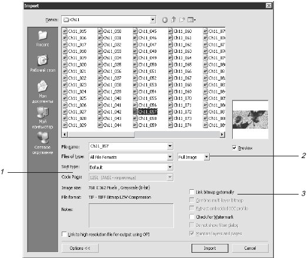Рис. 11.1. Диалоговое окно команды Import (Импорт)
Выпадающее меню (2), содержащее несколько очень важных настроек. С их помощью можно определить, в каком виде изображение будет помещено на рабочий лист. Есть три варианта:
Full Image (Изображение целиком) — картинка будет вставлена без изменений;
Full Image (Изображение целиком) — картинка будет вставлена без изменений;
Resample (Изменить размер) — вызывается дополнительное окно, в котором можно изменить разрешение и геометрические размеры вставляемого изображения.
Флажок Link Bitmap Externally (Связать с внешним файлом) (3) диалогового окна Import (Импорт) обеспечивает связь вставленного изображения с его оригиналом на диске. Если установить этот флажок, то впоследствии при изменении оригинала вы сможете обновить картинку в документе CorelDRAW, выбрав команду Bitmaps \Rightarrow Update From Link (Точечная графика \Rightarrow Обновить связи).
ПРИМЕЧАНИЕ.Обрезать растровое изображение или изменить его размеры можно и после его вставки. Для обрезки воспользуйтесь инструментом Shape (Форма) или Pick (Выбор). Выделив одну или несколько угловых точек изображения, переместите их так, чтобы картинка уменьшилась до необходимых размеров. При этом она не обязательно должна оставаться прямоугольной. Некоторые инструменты группы Shape Edit (Изменение формы), например Knife (Лезвие), позволяют разрезать изображение по произвольной кривой (рис. 11.2).
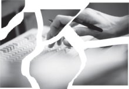Рис. 11.2. Фотография, разрезанная на части инструментом Knife (Лезвие)
Для изменения размеров растрового изображения служит диалоговое окно Resample (Изменение размеров) (рис. 11.3), вызываемое командой Bitmaps \Rightarrow Resample (Точечная графика \Rightarrow Изменить размер).
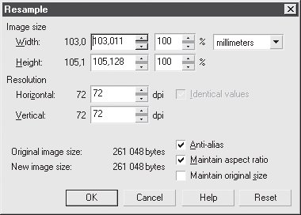Рис. 11.3. Диалоговое окно Resample (Изменение размеров)
В этом диалоговом окне можно изменить как геометрические размеры изображения (область Image Size (Размеры изображения)), так и его разрешение (область Resolution (Разрешение)).
Растрирование и трассировка
Помимо вставки существует еще один путь создания растрового изображения в документе CorelDRAW. Вы можете выделить любой векторный объект и применить к нему команду Bitmaps \Rightarrow Convert to Bitmap (Точечная графика \Rightarrow Растрировать).
При этом вызывается диалоговое окно, в котором нужно выбрать цветовую модель, разрешение и другие параметры создаваемого изображения.
Для выполнения обратной задачи (трассировки) — преобразования растрового объекта в набор векторных — применяется программа CorelTRACE. Для ее вызова служит команда Bitmaps \Rightarrow Trace Bitmap (Точечная графика \Rightarrow Трассировка).
Цветокоррекция
Под термином "цветокоррекция" понимают изменение яркости и цвета изображения. CorelDRAW предлагает достаточно мощный арсенал средств для цветокорекции растровых изображений, однако авторы уверены, что с этой задачей гораздо лучше справляются специальные графические пакеты, например, Adobe Photoshop. Поэтому здесь мы ограничимся только кратким перечислением функций цветокорреции CorelDRAW.
Изменение цветовой модели
Наиболее серьезные изменения цвета изображения происходят в результате замены его цветовой модели, для чего применяется подменю Bitmaps \Rightarrow Mode (Точечная графика \Rightarrow Цветовая модель) (рис. 11.4).
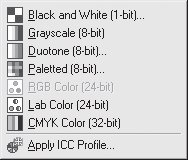Рис. 11.4. Подменю Bitmaps_Mode (Точечная графика_Цветовая модель)
При преобразовании в Black and White (Черно-белый), Duotone (Дуплекс) и Palette (Фиксированная палитра) появляются диалоговые окна, в которых необходимо указать дополнительные параметры: для Black and White (Черно-белый) — способ преобразования, для Duotone (Дуплекс) — цвета дуплекса, а для Paletted (Фиксированная палитра) — тип палитры.
СОВЕТ.Использование черно-белых изображений удобно тем, что их можно окрасить в любой цвет, например, щелкнув правой кнопкой мыши на цветовой палитре в окне программы.
Пристыковываемое окно Bitmap Color Mask (Цветовая маска)
С помощью этого пристыковываемого окна (рис. 11.5) отдельные цвета и цветовые диапазоны можно делать прозрачными.
Его можно вызвать, выполнив команду Bitmaps \Rightarrow Color Mask (Точечная графика \Rightarrow Цветовая маска).
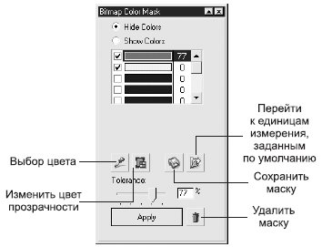Рис. 11.5. Пристыковываемое окно Bitmap Color Mask (Цветовая маска)
Предположим, например, что необходимо убрать белый фон следующей фотографии (рис. 11.6).
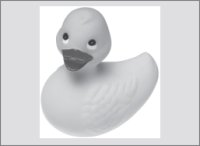Рис. 11.6. Исходное изображение
Вызовите пристыковываемое окно Bitmap Color Mask (Цветовая маска). Выделите фотографию.
Инструментом Color Selector (Выбор цвета) (кнопка с изображением пипетки) щелкните на белом фоне — в списке цветов сразу же появится образец белого цвета.
Установите флажок в его строке (если он не установлен), а также переключатель в положение Hide Colors (Спрятать цвета) и щелкните на кнопке Apply (Применить) (рис. 11.7).
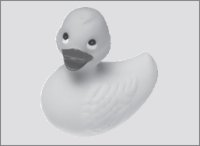Рис. 11.7. Белый фон убран
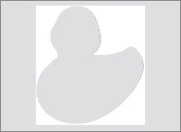Рис. 11.8. Инверсия цветовой маски
Если фон не совсем однородный, то увеличение параметра Tolerance (Допуск) позволит выделить цвет в более широком диапазоне. Установка переключателя в положение Show Colors (Показать цвета) оставит видимыми только цвета, отмеченные в пристыковываемом окне (рис. 11.8)
Подобранные параметры цветовой маски можно сохранить в отдельном файле, а затем загрузить и использовать для другого изображения. Для этого в пристыковываемом окне Bitmap Color Mask (Цветовая маска) есть специальные кнопки (см. рис. 11.5).
11.3. Растровые эффекты
Несмотря на то что CorelDRAW — это редактор векторной графики, при работе с ним доступно большое количество растровых эффектов (их вполне можно называть фильтры, или подключаемые модули, — работавшим в Photoshop это привычнее). Они дают достаточно широкие возможности, особенно начинающим пользователям — для получения удивительного результата достаточно нажать несколько кнопок.
Исходное изображение, на котором они будут демонстрироваться, показано на рис. 11.9.
Рис. 11.9. Исходное изображение
Все растровые эффекты расположены в меню Bitmaps (Точечная графика).
Группа 3D Effects (Трехмерные эффекты)
Эффекты этой группы имитируют искажения в трехмерном пространстве. Разумеется, это является не трехмерной графикой, а всего лишь имитацией объема средствами освещения, но результат их использования является достаточно неплохим и вполне может быть использован в самых разных работах.
3D Rotate (Трехмерный поворот)
Имитирует поворот растрового изображения в пространстве. Это же можно сделать при помощи других стандартных средств CorelDRAW, но в данном случае от пользователя не требуется никаких специальных навыков. Растровое изображение представляется как одна из сторон куба, который поворачивается в трех измерениях (рис. 11.10).
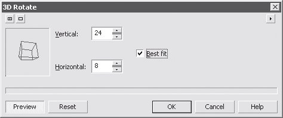Рис. 11.10. Диалоговое окно эффекта 3D Rotate (Трехмерный поворот)
Окно содержит следующие настройки.
Vertical (По вертикали) — задается смещение виртуального куба по вертикали.
Horizontal (По горизонтали) — определяет смещение виртуального куба по горизонтали.
Best fit (Улучшенно) — обеспечивает наилучшее качество прорисовки при затратах больших системных ресурсов.
Результат использования 3D Rotate (Трехмерный поворот) показан на рис. 11.11.
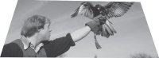Рис. 11.11. Результат применения 3D Rotate (Трехмерный поворот)
Эффект 3D Rotate (Трехмерный поворот) может быть полезен, например, при фотомонтаже, имитации объемности объекта и т. д. Он достаточно гибок и прост, обратите на него внимание.
Cylinder (Цилиндр)
Имитирует наложение растрового изображения на предмет, имеющий форму цилиндра, то есть вытягивает одни области и сужает другие.
В зависимости от настроек цилиндр может быть как выпуклым, так и вогнутым (второй случай напоминает наложение изображения на внутреннюю часть трубы). На рис. 11.12 приведено диалоговое окно данного эффекта.
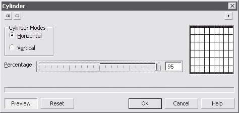Рис. 11.12. Диалоговое окно эффекта Cylinder (Цилиндр)
Окно содержит следующие настройки.
Horizontal (По горизонтали) — в этом случае смещение происходит в горизонтальной плоскости.
Vertical (По вертикали) — определяет задание смещения в вертикальной плоскости (это значит, что виртуальный цилиндр будет стоять, а не лежать).
Percentage (Степень) — степень применения эффекта (при минимальных значениях смещение будет едва заметно, при максимальных —изменится до неузнаваемости).
Результат использования эффекта Cylinder (Цилиндр) показан на рис. 11.13.
Рис. 11.13. Результат применения Cylinder (Цилиндр)
С помощью эффекта Cylinder (Цилиндр) можно имитировать объемные предметы.
Emboss (Рельеф)
Результат применения данного эффекта очень похож на барельеф. При этом мелкие детали теряются, а на основе крупных формируются объемные области. На рис. 11.14 приведено диалоговое окно данного эффекта.
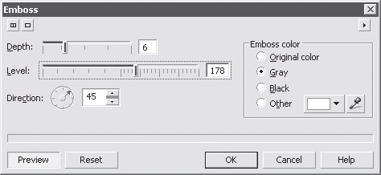Рис. 11.14. Диалоговое окно эффекта Emboss (Рельеф)
Окно содержит следующие настройки.
Depth (Глубина) — определяет высоту имитируемого барельефа.
Level (Уровень) — задает уровень яркости рельефа.
Emboss color (Цвет рельефа) — определяет цвета барельефа. Существует несколько вариантов:
Original color (Исходный цвет);
Gray (Серый);
Black (Черный);
Other (Другой).
Directional (Направление) — задает, с какого угла будет освещаться барельеф. Можно сказать, что для данного эффекта это главная настройка.
Эффект Emboss (Рельеф) можно использовать по прямому назначению — для имитации объемной лепки, а также как составную часть сложных эффектов с растровыми изображениями Результат его применения показан на рис. 11.15.
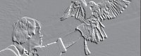Рис. 11.15. Результат применения эффекта Emboss (Рельеф)
Page Curl (Завернутый уголок)
Один из самых популярных эффектов в CorelDRAW. Позволяет имитировать завернутый бумажный уголок. Данный эффект очень простой и эффективный, и его достаточно часто используют начинающие дизайнеры. Однако из-за чрезвычайно частого использования завернутый уголок является приметой плохого вкуса того, кто делал работу. На рис. 11.16 приведено диалоговое окно данного эффекта. Окно содержит следующие настройки.
Кнопки, при помощи которых можно выбрать, какой угол изображения будет загнут.
Directional (Направление) — определяет, в каком направлении уголок будет более выраженным. Существует два варианта:
Vertical (По вертикали);
Horizontal (По горизонтали).
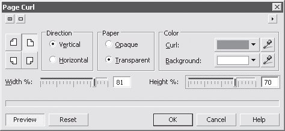Рис. 11.16. Диалоговое окно эффекта Page Curl (Завернутый уголок)
Paper (Бумага) — задает тип "бумаги", из которой будет сделан завернутый уголок:
Opaque (Обычная) — обычная непрозрачная бумага;
Transparent (Прозрачная) — прозрачная основа, из-под которой видно основное изображение, этот вариант менее реалистичен, но более эффектен.
Color (Цвет) — определяет цвета создаваемого уголка:
Curl (Уголок) — цвет уголка;
Background (Фон) — цвет фона, который появится на освободившемся в результате загиба уголка пространстве.
Width (Ширина) — задает, сколько процентов горизонтальной стороны выбранного угла изображения будет отведено под завиток.
Height (Высота) — указывает, сколько процентов вертикальной стороны выбранного угла изображения будет отведено под завиток.
Результат применения эффекта показан на рис. 11.17.
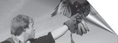Рис. 11.17. Результат применения эффекта Page Curl (Завернутый уголок)
Perspective (Перспектива)
Эффект, позволяющий имитировать перспективу или создавать скос для растрового изображения. Обратите внимание на данный эффект, так как имитировать объем или создать скос для растрового объекта в CorelDRAW можно, только используя данный эффект. На рис. 11.18 приведено диалоговое окно настроек данного эффекта.
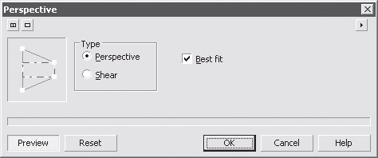Рис. 11.18. Диалоговое окно настроек эффекта Perspective (Перспектива)
Окно содержит следующие настройки.
Type (Тип) — вид используемой деформации. Существует два варианта: Perspective (Перспектива) — имитация эффекта перспективы, одновременно искажаются две стороны виртуального прямоугольника; чтобы воспользоваться этим эффектом, перетягивайте белые точки на фигуре в левой части диалогового окна; Shear (Скос) — одновременно искажается только одна сторона.
Best fit (Улучшенно) — обеспечивает максимальное качество, но при этом затрачиваются наибольшие системные ресурсы компьютера.
Рис. 11.19. Результат применения эффекта Perspective (Перспектива)
Эффект Perspective (Перспектива) можно использовать, например, при фотомонтаже и имитации объемных предметов. Результат применения этого эффекта показан на рис. 11.19.
Pinch/Punch (Вдавливание/Выдавливание)
Достаточно интересный эффект, имитирующий либо втянутость изображения в указанной точке, либо резкую выпуклость. Точно такой же по действию фильтр есть во всех основных растровых графических пакетах (например, в Adobe Photoshop), что говорит о его необходимости. На рис. 11.20 приведено диалоговое окно настроек данного эффекта. Окно содержит следующие настройки.
Pinch/Punch (Вдавливание/Выдавливание) — определяет действие эффекта. Если значение больше 0, то будет создана выпуклость, если меньше — втянутость.
Щелкнув на пиктограмме в виде курсора, а затем в нужном месте изображения, можно указать центр применения эффекта.
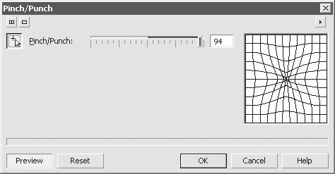Рис. 11.20. Диалоговое окно настроек эффекта Pinch/Punch (Вдавливание/Выдавливание)
Эффект Pinch/Punch (Вдавливание/Выдавливание) может быть полезен как составная часть более сложного эффекта или при фотомонтаже. Результат его применения показан на рис. 11.21.
Рис. 11.21. Результат применения эффекта Pinch/Punch (Вдавливание/Выдавливание)
Sphere (Сфера)
Имитирует наложение части изображения на объемную сферу. Достаточно простой, красивый и часто используемый эффект. На рис. 11.22 приведено окно его настроек. Окно содержит следующие настройки.
Optimize (Оптимизация) — определяет, что будет приоритетом при создании эффекта. Содержит две настройки:
Speed (Скорость) — преимущество будет отдано скорости создания эффекта;
Quality (Качество) — главным будет качество результата, даже если это потребует большего количества времени (при мощности современных процессоров разница настолько малозаметна, что авторы советуют использовать именно этот вариант).
Percentage (Степень) — уровень применения эффекта. При значениях больше нуля будет создаваться выпуклая область, при значениях меньше нуля — вогнутая. При 100% — правильная полусфера.
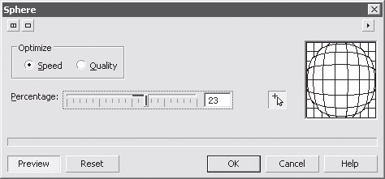Рис. 11.22. Диалоговое окно настроек эффекта Sphere (Сфера)
Эффект Sphere (Сфера) чаще всего используют для имитации объема в растровых изображениях (рис. 11.23).
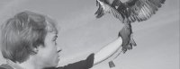Рис. 11.23. Результат применения эффекта Sphere (Сфера)